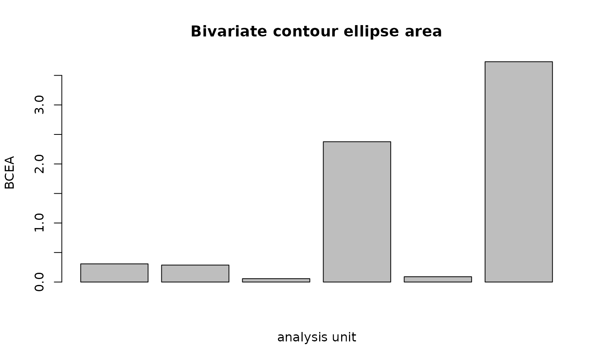
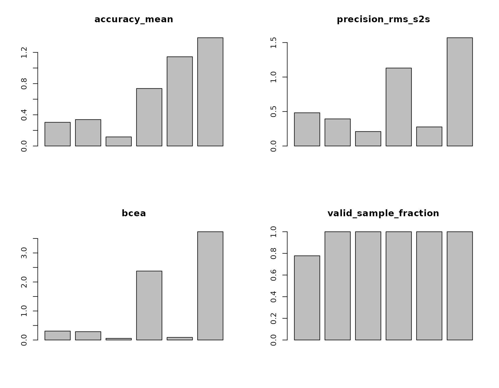

Data Quality plot gallery and reporting clinic
Source:vignettes/data-quality-plot-gallery.Rmd
data-quality-plot-gallery.Rmd
library(eyeprocess)
#> eyeprocess 0.12.0.9000: vendor-neutral eye/process data harmonization with first-class Gazepoint support.Purpose
This gallery complements the main standardized data-quality guide with visual, manuscript-facing examples. It uses deterministic synthetic validation data, not empirical performance claims.
validation <- simulate_gaze_quality_calibration(
seed = 20260918,
samples_per_target = 18,
nominal_sampling_hz = 60
)
quality <- create_gaze_quality_report(
validation,
by = c("profile", "target_id"),
valid = "valid",
missing_reason = "missing_reason",
nominal_sampling_hz = 60,
bcea_probability = 0.68,
preprocessing_spec = "synthetic raw validation samples; no interpolation",
quality_rules = "descriptive review only"
)
center_target <- quality[quality$target_id == 5, ]Accuracy
plot_gaze_accuracy(center_target)Higher target-referenced error means recorded gaze is farther from the known target. Accuracy is not precision: a stable offset can be precise but inaccurate.
RMS sample-to-sample precision
plot_gaze_precision(center_target)RMS-S2S describes successive-sample fluctuation during stable gaze. Do not calculate or interpret it across target changes or intended saccades. The implementation never bridges a missing sample.
BCEA
plot_bcea(center_target)
BCEA summarizes spatial dispersion as an area. The probability level must be reported; the canonical default is 0.68. BCEA is not a target-referenced accuracy statistic.
Sampling intervals
irregular <- validation[
validation$profile == "irregular_sampling" &
validation$target_id == 5,
]
plot_sampling_intervals(irregular, time = "timestamp_ms", time_unit = "ms")Long intervals describe realized timebase irregularity. When a
nominal rate is supplied, long_interval_count records
anomalously long intervals and dropped_interval_count
estimates how many nominal samples those gaps represent. Neither
quantity is a direct hardware packet-loss measurement.
Four-panel quality dashboard
plot_gaze_quality_dashboard(center_target)
The dashboard is a descriptive review surface. It is not a composite score and does not make exclusion decisions.
Review-rule sensitivity
reviewed <- create_gaze_quality_report(
validation,
by = c("profile", "target_id"),
valid = "valid",
missing_reason = "missing_reason",
nominal_sampling_hz = 60,
thresholds = list(
accuracy_mean = list(max = 1.0),
valid_sample_fraction = list(min = 0.80)
)
)
table(reviewed$review_required)
#>
#> FALSE TRUE
#> 25 29
attr(reviewed, "gaze_quality_provenance")$automatic_exclusion
#> [1] FALSEThresholds are study-specific review rules. They do not silently drop trials, participants, or files. A defensible analysis reports the primary rule and then checks whether conclusions change under plausible alternatives.
Reporting checklist
A manuscript should report, where relevant:
- coordinate unit and any screen/viewing geometry used for conversion;
- validation/check-target procedure and grouping level;
- target-referenced accuracy statistic;
- exact precision definition (RMS-S2S, SD, and/or BCEA);
- BCEA probability when used;
- nominal and empirically realized sampling behavior;
- operational definition and amount of data loss;
- review/exclusion thresholds and numbers affected;
- sensitivity analyses when substantive conclusions depend on quality choices.
A compact starting point is:
report_gaze_quality(center_target)
#> [1] "accuracy_mean: mean 0.671, range 0.116-1.388; precision_rms_s2s: mean 0.677, range 0.210-1.570; precision_sd: mean 0.466, range 0.126-1.087; bcea: mean 1.142, range 0.057-3.732; effective_sampling_hz: mean 56.278, range 46.667-60.000; valid_sample_fraction: mean 0.963, range 0.778-1.000; data_loss_fraction: mean 0.037, range 0.000-0.222. Review required for 0/6 analysis units. Thresholds, when supplied, are study-specific review rules and never trigger automatic exclusion."API links
compute_gaze_accuracy()compute_rms_s2s()compute_gaze_sd_precision()compute_bcea()estimate_sampling_interval()estimate_sampling_jitter()estimate_effective_sampling_rate()compute_gaze_data_loss()create_gaze_quality_report()plot_gaze_accuracy()plot_gaze_precision()plot_bcea()plot_sampling_intervals()plot_gaze_quality_dashboard()report_gaze_quality()
Limitations
These functions characterize the measurement process. They do not establish attention, engagement, cognitive load, motivation, competence, or clinical status. Synthetic examples demonstrate software behavior; they are not tracker benchmarks and do not define universal exclusion thresholds.